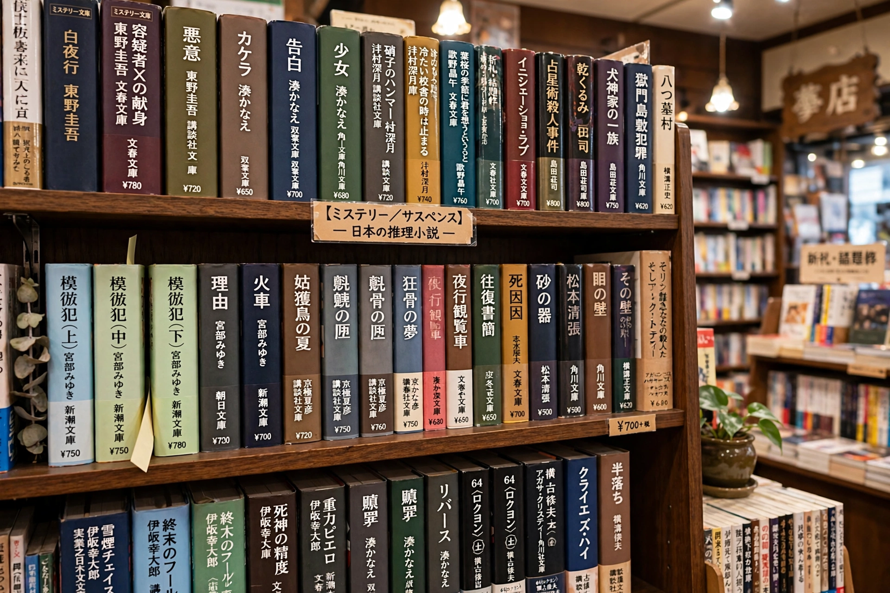

Japanese mystery fiction
 | |
| Country | Japan |
|---|---|
| Language | Japanese |
| Key movements | Honkaku (orthodox), shakaiha (social school), shin honkaku (new orthodox) |
| Major figures | Edogawa Ranpo, Seishi Yokomizo, Seichō Matsumoto, Soji Shimada, Yukito Ayatsuji |
Japanese mystery fiction is one of the largest and most developed traditions of detective and crime literature outside the English-speaking world. Rooted in translations of Edgar Allan Poe, Arthur Conan Doyle, and the British Golden Age writers, it developed distinctive schools devoted to fair-play puzzle plotting and to socially engaged crime writing.
Origins and the honkaku school
Modern Japanese detective fiction began in the 1920s with Hirai Tarō, who wrote as Edogawa Ranpo — a pen name riffing on "Edgar Allan Poe" — author of stories such as "The Human Chair" and creator of the detective Kogoro Akechi. Seishi Yokomizo created the scruffy private detective Kosuke Kindaichi in novels including The Honjin Murders (1946) and The Inugami Clan (1951). These writers established the honkaku ("orthodox") school: cerebral, fair-play whodunits, often with locked-room murders and elaborate diagrams.
The social school and the shin honkaku revival
In the late 1950s Seichō Matsumoto revolutionized the genre with the shakaiha ("social school"), exemplified by Points and Lines (1958) and Inspector Imanishi Investigates, replacing puzzle tricks with police procedure and critiques of post-war Japanese society. In the 1980s, Soji Shimada's The Tokyo Zodiac Murders (1981) and Yukito Ayatsuji's The Decagon House Murders (1987) launched the shin honkaku ("new orthodox") revival, a playful return to Golden Age puzzle structures.
Contemporary writers
Modern Japanese crime fiction in translation includes Keigo Higashino (The Devotion of Suspect X), Miyuki Miyabe (All She Was Worth), Natsuo Kirino (Out), Fuminori Nakamura, and Kotaro Isaka (Bullet Train). The Mystery Writers of Japan, founded in 1947 by Ranpo, awards the annual Edogawa Ranpo Prize for unpublished manuscripts.